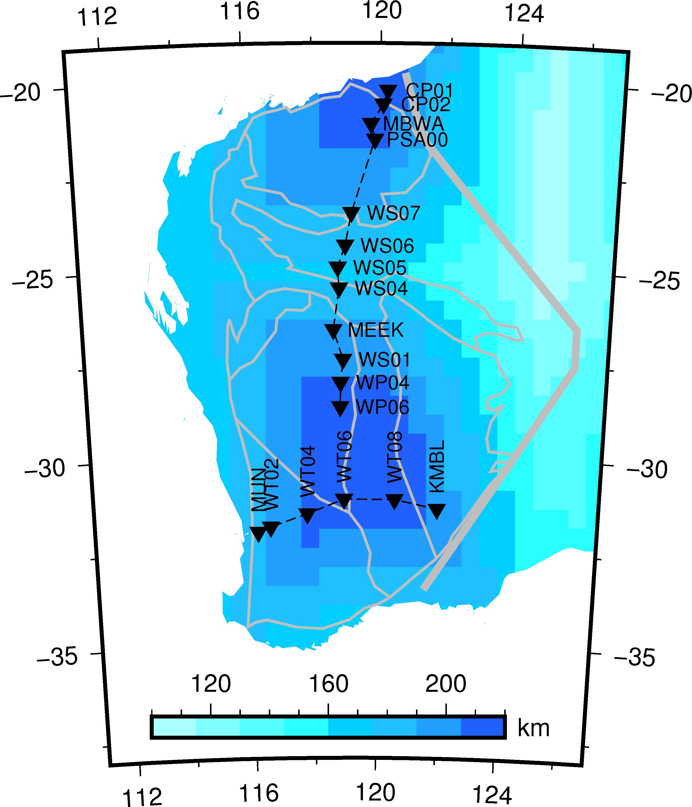

Thermal lithosphere thickness¶
Description: The thermal lithosphere thickness beneath Western Australian Craton.
{kind=link}
1 2 3 4 5 6 7 8 9 10 11 12 13 14 15 16 17 18 19 20 21 22 23 24 25 26 27 28 29 30 31 32 33 34 35 36 37 38 39 40 41 42 43 44 45 46 47 48 49 50 51 52 53 54 55 56 57 58 59 60 61 62 63 64 65 66 67 68 69 70 71 72 73 74 75 76 77 78 79 80 81 82 83 84 85 86 87 88 89 90 91 92 93 94 95 96 97 98 99 100 101 102 103 104 105 106 107 108 | #!/usr/bin/env python
import numpy as np
import gmt as gmt5
import os, glob
from scipy.interpolate import griddata
"""
Extract thermal lithospheric thickness and plot
The thermal lithospheric thickness are resampled to grids of 0.5x0.5 degree
"""
def edit_thermal_lithos():
with open("TC1-5x5.dat") as fp:
lst = fp.readlines()
pnt = []
val = []
for line in lst[1:]:
row = line.split(",")
lon = float(row[0])
lat = float(row[1])
thick = float(row[9])
pnt.append([lon, lat])
val.append(thick)
pnt = np.array(pnt)
val = np.array(val)
lon = np.arange(-180, 180.1, 0.5)
lat = np.arange(-90, 90.1, 0.5)
[lo, la] = np.meshgrid(lon, lat)
zval = griddata(points=pnt, values=val, xi=(lo, la), method="linear")
lo = lo.reshape(lo.size)
la = la.reshape(la.size)
zval = zval.reshape(zval.size)
fp = open("global_thermal_lithos_thickness.xyz", "w")
for i in range(len(lo)):
fp.write("%f\t%f\t%f\n" % (lo[i], la[i], zval[i]))
fp.close()
# edit_thermal_lithos()
psfile = "wa_thermal_lithos_thickness.ps"
R = "111/127/-38/-19"
J = "B119/-28.5/-38/-19/8c"
gmt = gmt5.Gmt()
gmt.set("MAP_FRAME_TYPE", "plain")
gmt.set("MAP_DEGREE_SYMBOL", "none")
gmt.cmd("xyz2grd", "global_thermal_lithos_thickness.xyz -Gglobal_thermal_lithos_thickness.grd -I0.5/0.5 -R-180/180/-90/90")
gmt.cmd("makecpt", "-Cthermal.cpt -T100/220 -I > color.cpt")
gmt.cmd("pscoast", "-J%s -R%s -K -Gc > %s" % (J, R, psfile))
gmt.cmd("grdimage", "global_thermal_lithos_thickness.grd -J%s -R%s -Ccolor.cpt -K -O >> %s" % (J, R, psfile))
# gmt.cmd("pscoast", "-J%s -R%s -Bx4f2 -By5f2.5 -W1/0.5p -N1 -A500 -K -Slightblue > %s" % (J, R, psfile))
gmt.cmd("pscoast", "-J%s -R%s -Bx4f2 -By5f2.5 -W1/2p -N1 -A500 -K -O -Q >> %s" % (J, R, psfile))
gmt.cmd("psscale", "-DjBC+w5c/0.3c+h -Ba40f10 -By+l'km' -Ccolor.cpt -J -R -K -O -Xa-0.25c >> %s " % (psfile))
# cratonic boudary
gmt.cmd("psxy", "-J -R -K -O -W3p,gray wacraton_line.dat >> %s" % (psfile))
for file in ["pilbara.gmt", "yilgarn.gmt", "capricorn.gmt"]:
gmt.cmd("psxy", "%s -J -R -K -O -W1p,gray -L >> %s" % (file, psfile))
for file in ["idf.gmt", "kaf.gmt", "yxf.gmt", "yyf.gmt"]:
gmt.cmd("psxy", "%s -J -R -K -O -W1p,gray >> %s" % (file, psfile))
# gmt.cmd("pslegend", "legend.in -J -R -K -O -DjBL+w4c+o0.2c/0.2c >> %s" % (psfile))
# gmt.cmd("pstext", "text.in -J -R -K -O -F+f >> %s" % (psfile))
gmt.shell("cat wa_station.txt | awk '{print $2,$3}' > wa_station.xy")
gmt.cmd("psxy", "wa_station.xy -J -R -K -O -Si0.3c -Gblack >> %s" % (psfile))
gmt.cmd("psxy", "wa_station.xy -J -R -K -O -W0.5p,- >> %s" % (psfile))
gmt.shell("cat wa_station.txt | awk '{print $2,$3,8p,$1}' > wa_station.xyt")
gmt.cmd("pstext", "wa_station.xyt -J -R -K -O -F+f -Xa0.6c >> %s" % (psfile))
gmt.shell("cat wa_sta_we.txt | awk '{print $2,$3}' > wa_station.xy")
gmt.cmd("psxy", "wa_station.xy -J -R -K -O -Si0.3c -Gblack >> %s" % (psfile))
gmt.cmd("psxy", "wa_station.xy -J -R -K -O -W0.5p,- >> %s" % (psfile))
gmt.shell("cat wa_sta_we.txt | awk '{print $2,$3,90,8p,$1}' > wa_station.xyt")
gmt.cmd("pstext", "wa_station.xyt -J -R -K -O -F+a+f -Ya0.6c >> %s" % (psfile))
gmt.cmd("psxy", "-J -R -O -T >> %s" % psfile)
gmt.cmd("psconvert", "-A -P -Tj -E720 %s" % psfile)
gmt.cmd("psconvert", "-A -P -Tf %s" % psfile)
gmt.execute()
|